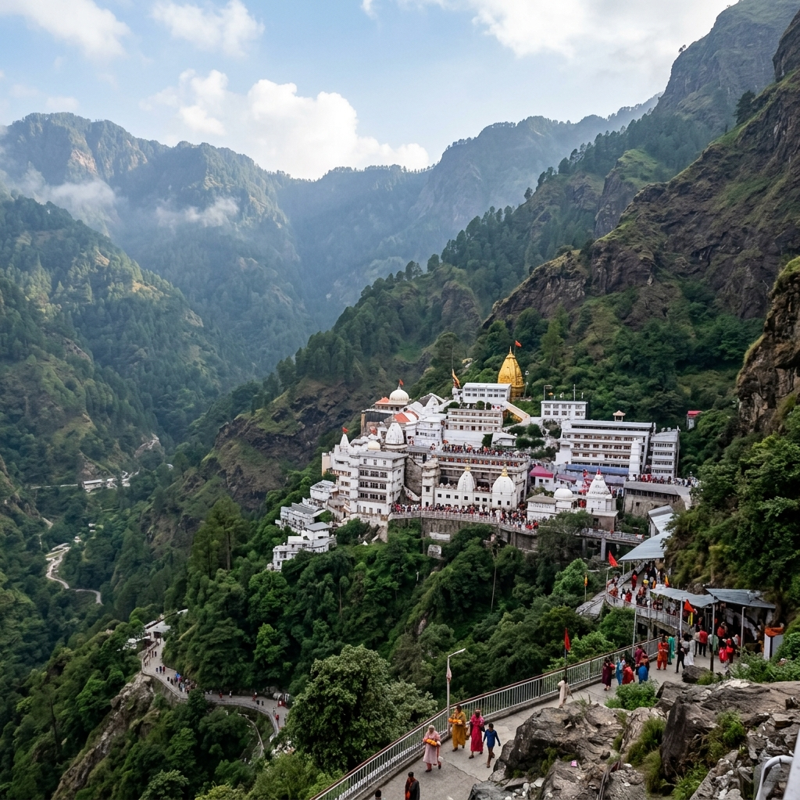

Vaishno Devi Package
4 Days / 3 Nights · Katra stay · transfer support
Simple darshan planning with fewer moving parts
This package is made for travellers who want a clear Vaishno Devi plan without handling hotel, transfers, and movement decisions separately.
It suits families, older travellers, and pilgrims who prefer a smoother setup. The route can stay simple with arrival, Katra base, darshan movement, and departure, or be paired later with a Kashmir extension if desired.
The value here is ease. You know where you are staying, how the transfers will work, and what the basic darshan flow looks like before the trip begins.
Day 1: Arrival and transfer to Katra
Pickup from arrival point, transfer to Katra, hotel check-in, and darshan briefing based on current operational conditions.
Day 2: Vaishno Devi darshan day
Undertake darshan according to your chosen mode, with flexibility for helicopter or walking-based plans.
Day 3: Recovery, rest, or local extension
Use this day for rest, extra temple time, or onward regional movement depending on travel style.
Day 4: Departure
Return transfer with support for timing, luggage movement, and route coordination.
Included
- Katra accommodation
- Arrival and departure transfers
- Basic darshan planning support
- Local coordination
Not Included
- Helicopter tickets unless selected
- Registration costs if applicable
- Meals not listed
- Personal offerings and purchases
Optional add-on
This package can be combined with Srinagar or Kashmir sightseeing if you want pilgrimage plus leisure in one longer route.